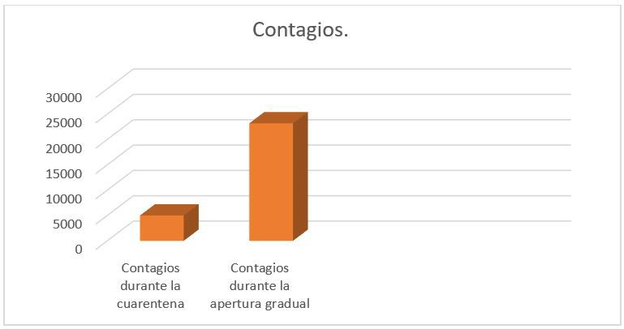
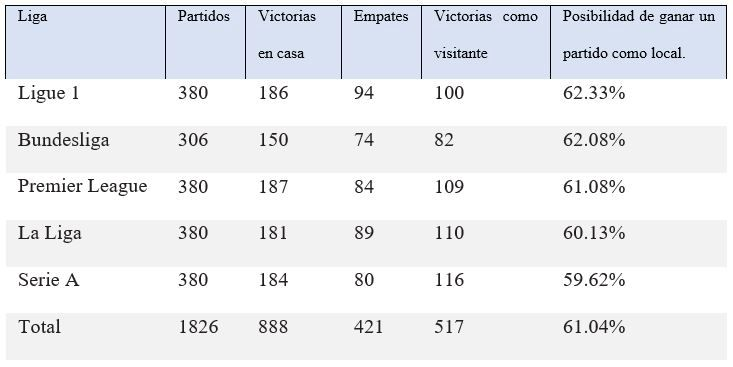
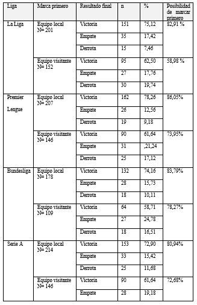
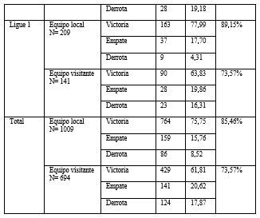

Introducción
Comprender la practica estadística, es una de las
tareas que debe cumplir la educación hoy en día,
es por eso, que en esta investigación el objetivo
principal es mostrar las diversas aplicaciones de esta
ciencia en la vida cotidiana de personas estudiadas y
personas empíricas, que usan la probabilidad para las
distintas tareas que se presentan en la vida cotidiana.
La estadística es parte fundamental de nuestras
vidas ya que gracias a ella es posible recolectar
una gran cantidad de datos y poder darle respuesta
a los eventos que se presentan. Se presenta en la
investigación cualitativa usando herramientas no
estandarizadas, como preferencias o motivación que
sea de criterio de elección para un objeto. Por otro
lado, en una investigación cuantitativa se presentan
datos numéricos que se encargan de promediar
eventos.
Muchas investigaciones, se encargan de aplicar tanto
la estadística como la probabilidad para un profundo
análisis de un experimento, como por ejemplo, las
dos aplicaciones mencionadas más adelante en donde
se evidencia un número de contagios de COVID-19
cuando estábamos en cuarentena obligatoria
diferente a cuando empezábamos a retomar nuestra
vida común y corriente, también de manera subjetiva,
los factores tales como la localía y mancar un gol de
primero son factores para que un equipo de futbol
pueda ganar un partido.
¿Qué es la investigación cualitativa?
La investigación cualitativa es un método para
recoger y evaluar datos no estandarizados. En
la mayoría de los casos se utiliza una muestra
pequeña y no representativa con el fin de obtener
una comprensión más profunda de sus criterios de
decisión y de su motivación (Alvarez, 2011) La
investigación cualitativa también puede servir de
base a un cuestionario cuantitativo. Sin embargo, la
investigación de mercado cualitativa también procura
resultados valiosos cuando se separa por completo de
los métodos cuantitativos. Es más, en algunos casos
es incluso imprescindible. Se usan para
- Entender el vínculo emocional que los clientes
tienen con la marca
- Identificar los obstáculos a la compra
- Saber cómo los productos son recibidos por los
clientes
Antes de empezar con la investigación cualitativa
se debe elaborar un plan. Como cualquier otra
investigación de mercado, la investigación cualitativa
se realiza en cinco pasos:
- Definición del problema y de los objetivos de la
investigación
- Diseño del plan de investigación
- Recopilación de datos
- Análisis de datos
- Presentación del informe con los resultados
(Questionpro, s.f.) (Etece, 2021)
¿Qué es la investigación cuantitativa?
Una investigación cuantitativa es aquella que permite
recabar y analizar datos numéricos en relación a unas
determinadas variables que han sido previamente
establecidas este tipo de investigación de mercados
estudia la relación entre todos los datos cuantitativos
para conseguir una interpretación precisa de los
resultados correspondientes. (Fernandez & Diaz,
2002) Toda investigación cuantitativa está basada en
la obtención de una serie beatos y n nadar en el análisis
de los mismos utilizando una serie de instrumentos
de investigación que forman parte de la estadística
la metodología de tipo cuantitativa se diferencia de
otras en su procedimiento basado en lo siguiente:
- Se basa en el enfoque positivista
- establece una distancia entre el sujeto y el objeto de
estudio para garantizar la objetividad
- parte de la formulación de una hipótesis a comprobar
derivada del conocimiento de teorías previas
- su objetivo es hallar las leyes generales que
expliquen los fenómenos estudiados
En ese sentido, la investigación cuantitativa se
diferencia de la cualitativa, que admite el estudio y
reflexión a partir de las representaciones simbólicas
que una cultura elabora sobre su realidad. (Torres, 2010) También se diferencian en que los análisis
cualitativos no pretenden establecer leyes generales
sino comprender la particularidad o singularidad de
su objeto de estudio. (SIS International, s.f.)
Método Estadístico
El método estadístico está compuesto por dos tipos
de razonamientos, el inductivo y el deductivo, el
método deductivo procede a sacar conclusiones
de lo particular de observaciones generales y en el
inductivo es a la inversa (Sabato, s.f). El método
estadístico es un método para tener un mejor manejo
de los datos en una investigación y además provee los
siguientes beneficios para la investigación:
- Facilita el manejo de grandes cantidades de
observaciones y datos por el empleo adecuado de la
muestra.
- Facilita el manejo de categorías tanto deductivas
como inductivas al convertirlas en variables
numéricas.
- Maximiza el carácter objetivo de la interpretación
no obstante la observación y participación del
sujeto investigador en el mismo grupo investigado.”
(bojaca, 2004)
Este método debe ser usado de manera consecuente
siguiendo una serie de paso parara poder obtener
un resultado óptimo, adecuado y a un nivel de
satisfacción que puede brindar este método, realizar
correctamente el método investigativo implica seguir
ciertas etapas las cuales son (Martínez, pascual, &
palacios, 2021) :
- Recolección
- Conteo
- Presentación
- Síntesis
- Análisis
- Recolección: dependiendo si es cuantitativo o
cualitativo podríamos referirnos a la recolección de
datos numéricos o datos característicos (Westreicher,
2021). No obstante, al final la recolección de datos
consiste en la medición de variables o en otras
palabras, recoger la información señalada en el
diseño de la investigación (Juarez, s.f). Aunque el
método idóneo para usar en la recolección de datos dependa de varios factores como el tipo de variable
o la precisión necesaria, los principales métodos de
recopilación de datos son los registros, cuestionarios,
entrevistas, observaciones directas y presentación de
informes (DANIDA, 1998)
- Conteo: las técnicas de conteo se usan para
determinar el número total de una recolección de
datos, generalmente se usan cuando hay una cantidad
muy grande de datos (Rubio, s.f). las cinco técnicas
de conteo principales son el principio multiplicativo,
el principio aditivo, permutaciones, permutación con
repeticiones y combinaciones (Garcia, 2017).
- Presentación: cuando recolectamos y contamos
los datos estadísticos debemos hacer una buena
presentación para que cobre un sentido significativo
de lo que queremos transmitir con estos datos
estadístico (SGAPEIO, s.f). para tener una buena
presentación de datos podemos contar con varias
herramientas como lo son los textos, mapas, tablas,
gráficos etc… pero la herramienta que usemos para
presentar estos datos dependerá en gran medida del
tipo de variable que estemos tratando (Fernandez,
2001). Los gráficos son una de las formas más
comunes de presentar datos y dentro de los gráficos
más usados se encuentran el grafico de barras, el
grafico circular, el histograma, el grafico de líneas,
grafico de áreas y grafico de dispersión (Mimenza,
s.f).
- Síntesis: cuando obtenemos una información
para poder analizarla es importante antes resumirla
o sintetizarla, esto se hace para llegar comprender
de una manera adecuada y eficiente los grupos
de características previamente halladas. (Piazza,
Sweeny, Wessel, Silver, & Whitney, 2013).
- Análisis: después de realizar la síntesis de datos
llego la hora de realizar la interpretación de los datos,
esta interpretación de datos es el paso final para poder
tomar la decisión más eficaz (Garzon, s.f). existen
hoy en día varios tipos de análisis, pero dentro de
los más usados se encuentran el análisis estadístico
simple el cual proporcional el fundamento básico
para el análisis estadístico, la inducción estadística
el cual analiza una población basada en un estudio
muestra, el análisis de serie de tiempo que analiza los
cambios en las actividades de negocios y económicas
(fernandez & guitart, s.f)
La práctica estadística como herramienta para una
investigación.
La investigación en muchos campos logra dar
respuesta a muchas preguntas, a través de los años,
la ciencia cada vez responde más interrogantes para
que el mundo siga avanzando científicamente, la
mayoría de las veces es un proceso largo, complicado
y que necesita una gran cantidad de dedicación para
establecer conclusiones a un proyecto investigativo.
Para muchos investigadores la estadística permite una
recolección de datos de acuerdo al tema a investigar,
brindándole una serie de elementos y métodos, tales
como: Entrevistas, observaciones, experimentos
sociales, encuestas, listas de cotejo entre otras. Todos
estos elementos permiten recolectar y almacenar una gran cantidad de información para un profundo
análisis de una investigación en base a un resultado
determinado.
Esta ciencia ha sido de gran importancia en los últimos
años, por ejemplo. En marzo de 2020 la OMS declaró
el COVID-19 como pandemia, y la estadística cumple
una labor importante en la recolección de datos,
existe un artículo investigativo titulado “Estudio
comparativo entre el contagio durante la cuarentena
obligada por el COVID-19 y el contagio durante la
apertura gradual y controlada para algunos sectores
de la economía en Colombia”. Esta investigación
pública mediante una eficaz recolección de datos, los
siguientes resultados.
Es necesario aclarar que los datos deben ser resultados
entregados por una fuente autorizada y veraz. Usando
la estadística, y sus diferentes métodos de recolección
de datos obtenemos los siguientes resultados.
Se puede evidenciar que el número de contagios de
cuarentena obligatoria en el período de aislamiento
entre el 25 de marzo hasta el 26 de abril del 2020
se obtiene sumando cada uno de los contagios
presentados, y esa sumatoria establece que 5002
individuos estaban contagiados con el virus durante
el periodo de aislamiento. Luego con la reapertura de
la economía gradualmente el número de contagios se
incrementa a 21390, desde el 27 de abril hasta el 29
de mayo del mismo año.
Como resultado, cabe destacar que esta recolección
de información se trata de datos cuantitativos, se
puede evidenciar el incremento de contagios entre un
periodo y otro, en promedio existen más u menos 152
casos por día cuando estábamos en nuestras casas.
Al empezar a salir de nuestros hogares para tratar
de volver a la normalidad el promedio de contagios
se incrementó significativamente hasta casi 648
contagios por día.
La estadística nos permite graficar estos eventos para
una mejor comprensión analítica sobre los resultados
de una investigación.
En este caso un gráfico de barras seria la opción
indicada para representar estos resultados.

Esto ha sido un ejemplo en cómo podemos usar
los métodos de recolección de datos para diversas
investigaciones cuando se trata de un grupo de
personas, con la ayuda de la estadística podemos
llegar a resultados y dar respuesta a muchas preguntas.
Una de las numerosas ramas de la estadística es
la probabilidad y la combinatoria, en la cual los
experimentos se dividen en sucesos o eventos
que determina un porcentaje de éxito o fracaso en
un experimento. La probabilidad se define como
método por el cual se obtiene la frecuencia de un
acontecimiento determinado mediante la realización
de un experimento aleatorio, del que se conocen
todos los resultados posibles, bajo condiciones
suficientemente estables. “Antes de la mitad del siglo
XVII, el término ‘probable’ significaba aprobable,
y se aplicaba en ese sentido, unívocamente, a la
opinión y a la acción. Una acción u opinión probable
era una que las personas sensatas emprenderían o
mantendrían, en las circunstancias” Amanda Dure
(siglo XVII).
En ese orden de ideas, la probabilidad nos ayuda a
saber qué porcentaje de posibilidad tenemos en una
situación determinada, esto es posible con el número
de elementos que cumplan una cierta cantidad de
condiciones dividido entre la cantidad total de los
elementos.
Para dar un ejemplo de una aplicación de la
probabilidad en la investigación, existe un artículo
investigativo titulado “Efecto de marcar primero y
la localización del partido en las principales ligas
del fútbol europeo”, en la cual el estudio con base
en investigaciones usando diversos métodos de
recolección de datos, demuestran que la probabilidad
de que los factores tales como el lugar del partido,
y el equipo que haga el primer gol tienen mayores
probabilidades de ganar el duelo futbolístico.
Desde el punto de vista psicológico, marcar el
primer gol en un partido es un importante predictor
del resultado final en el fútbol profesional (Casal,
Losada, Maneiro & Ardá, 2017; Lago-Peñas, Gómez,
Megías & Pollard, 2016) ya que naturalmente el
ser humano encuentra motivado cuando está en
condiciones favorables.
Para hacer posible esta investigación es necesario
cuantificar el número de puntos ganados en los
partidos como locales, expresado como un porcentaje
de todos los puntos ganados como local y visitante,
es decir, de todos los partidos extraer los partidos
ganados en casa como condición de todos los partidos
jugado de la temporada. Dividir esos resultados nos
arroja la probabilidad de ganar cuando un equipo
está en su propio estadio y con su afición.

Cabe destacar que esto es un hecho subjetivo, ya
que el futbol es un deporte muy sorpresivo en el
momento de los partidos, por varios factores ya sean
psicológicos de cada jugador o ajenos a ellos como
por ejemplo la climatología de un estadio.
Por otra parte, el porcentaje de posibilidad de ganar
un partido cuando un equipo marca de primero,
teniendo en cuenta la localía y el hecho de ser
visitante en un partido, son factores tomados en cuenta para este cálculo estadístico.


Esta tabla nos muestra el resultado final de un partido en función si el equipo marca de primero en el
encuentro,
en general la estadística nos ayuda a esta recolección de datos por ejemplo podemos deducir que los equipos
que juegan en casa y hacen el primer gol tienen el 75,72% de posibilidad de ganar el partido, empíricamente
esto es tomado en cuenta para los apostadores que buscan el hecho más favorable para poder conseguir dinero
apostando a los posibles resultados de los partidos de futbol.
Esto es otro ejemplo de aplicación de la estadística,
específicamente de la probabilidad, y si bien es
usado hasta en el deporte como ya pudimos notar
anteriormente.
Existen muchas más aplicaciones como en la
informática o con la inteligencia artificial, las
aplicaciones de la inteligencia artificial (I.A.) en
Estadística persiguen integrar distintos contrastes,
estimaciones, transformaciones y modelos para
conseguir una aproximación coherente y total en
Análisis de Datos, estableciendo estrategias que
dirijan el proceso de modelización, de elección de
técnicas y transformaciones a aplicar, y de ayuda a
la interpretación de los resultados.
En la ingeniería en sistemas muchas ocasiones un
ingeniero debe trabajar con situaciones inciertas. La
estadística puede ayudar a decidir entre diferentes
variables para resolver ecuaciones complejas.
En las ventas la planificación en función a los
análisis pormenorizados sobre las necesidades de
los consumidores, sus gustos y sus preferencias.
La medición de la calidad del servicio, del nivel de
satisfacción de los clientes y las propias estrategias de
ventas son determinados por la aplicación de técnicas
estadísticas. Los equipos de ventas son evaluados
con base en tablas de frecuencia. Los resultados de
estas evaluaciones son convertidos en parámetros que
determinan sus niveles de efectividad.
Conclusiones
La investigación es muy importante y proporciona
avances en la humanidad, esta acción estimula el
pensamiento crítico y creatividad, genera libertad de
pensamiento y autonomía del conocimiento. Como
resultado a nuestro estudio, especificamos cada
método de investigación estadístico desde el ámbito
cualitativo y cuantitativo, la importancia para un
investigador el uso de las herramientas de recolección
de datos y sus aplicaciones en la realidad.
Referencias
- Cutipa, G. (11 de noviembre de 2020). Investigación
cientifica. Obtenido de https://guidocutipa.blog.bo/investigacion/importancia-estadisticainformatica/
- Díaz-Pinzón, J. E. (2020). Repertorio de medicina
y cirugía . Obtenido de https://revistas.fucsalud.edu.co/index.php/repertorio/article/view/1073/1245
- Estrada, L. (2018). MOTIVACIÓN Y EMOCIÓN.
Obtenido de https://digitk.areandina.edu.co/bitstream/handle/areandina/3541/138%20MOTIVACI%C3%93N%20Y%20EMOCI%C3%93N.pdf?sequence=1&isAllowed=y
- FBREF. (s.f.). Estadísticas diversas de 2021-2022
Las 5 grandes ligas europeas. Obtenido de 2021:
https://fbref.com/es/comps/Big5/misc/equipos/Estadisticas-de-Las-5-grandes-ligas-europeas
- Murillo, N. (s.f.). Lifeder. Obtenido de https://www.lifeder.com/aplicaciones-estadistica/
- Romo, D. (23 de 3 de 2020). Gobierno Nacional
expide el Decreto 457, mediante el cual se
imparten instrucciones para el cumplimiento del
Aislamiento Preventivo Obligatorio de 19 días en
todo el territorio colombiano. Obtenido de https://id.presidencia.gov.co/Paginas/prensa/2020/Gobierno-Nacional-expide-Decreto-457-mediante-el-cual-imparten-instrucciones-paracumplimiento-Aislamiento-Preventiv-200323.aspx
- Salud, M. d. (6 de marzo de 2020). Colombia
confirma su primer caso de COVID-19. Obtenido
de minsalud.gov.co/Paginas/Colombia-confirmasu-primer-caso-de-COVID-19.aspx
- Westreicher, G. (25 de agosto de 2020). Economipedia.
Obtenido de https://economipedia.com/definiciones/probabilidad.html
- Alvarez, C. A. (2011). pdf. Obtenido de https://www.uv.mx/rmipe/files/2017/02/Guia-didacticametodologia-de-la-investigacion.pdf
- Etece. (5 de agost de 2021). concepto. Obtenido de
https://concepto.de/investigacion-cualitativa-ycuantitativa/
- Fernandez, P., & Diaz, P. (27 de mayo de 2002). pdf.
Obtenido de https://fisterra.com/mbe/investiga/cuanti_cuali/cuanti_cuali2.pdf
- Questionpro. (s.f.). Obtenido de https://www.questionpro.com/blog/es/que-es-lainvestigacion-cuantitativa/
- SIS International. (s.f.). Obtenido de https://www.sisinternational.com/investigacion-cuantitativa/
- Torres, P. (1 de febrero de 2010). pdf.
Obtenido de http://ftp.isdi.co.cu/Docencia/Posgrado/Maestr%C3%ADa/La%20investigaci%C3%B3n%20cuantitativa.pdf
- bojaca. (2004). Obtenido de https://es.scribd.com/
document/464625321/El-metodo-estadistico
burgos, a. p. (2021).
- DANIDA. (30 de mayo de 1998). Obtenido de
https://www.fao.org/3/x2465s/x2465s08.htm
- Fernandez, D., & guitart, M. (s.f). Obtenido de http://www1.frm.utn.edu.ar/estadistica/documentos/ed&ad.pdf
- Fernandez, p. d. (2 de abril de 2001). fisterra.
Obtenido de https://www.fisterra.com/formacion/metodologia-investigacion/representaciongrafica-analisis-datos/
- Garcia, p. g. (27 de marzo de 2017). Obtenido de
NAPS tecnologia y educacion: https://naps.com.mx/tecnicas-de-conteo-en-probabilidad-yestadistica/
- Garzon, j. (s.f). Obtenido de http://www.usc.es/genp/docencia/AnalDatos_New.pdf
- Juarez, j. (s.f). Obtenido de http://ri.uaemex.mx/bitstream/handle/20.500.11799/35063/secme-21103.pdf?sequence=1&isAllowed=y
- Martínez , r., pascual, v., & palacios, r.
(2021). Obtenido de file:///D:/Nueva%20carpeta/Nueva%20carpeta/6703-Manuscrito-35151-2-10-20201201.pdf
- Mimenza, o. c. (s.f). psicologia y mente. Obtenido de
https://psicologiaymente.com/miscelanea/tiposde-graficas
- Piazza, e., sweeny, t., wessel, d., silver, m., & whitney, d. (12 de junio de 2013). sage
journals.
Obtenido de https://journals.sagepub.com/
doi/10.1177/0956797612473759
- Rubio, n. m. (s.f). psicologia y mente. Obtenido
de https://psicologiaymente.com/miscelanea/tecnicas-de-conteo

 Estudiante de Ingeniería Ambiental,
Universidad Francisco de Paula Santander, Cúcuta, Colombia.
Estudiante de Ingeniería Ambiental,
Universidad Francisco de Paula Santander, Cúcuta, Colombia.